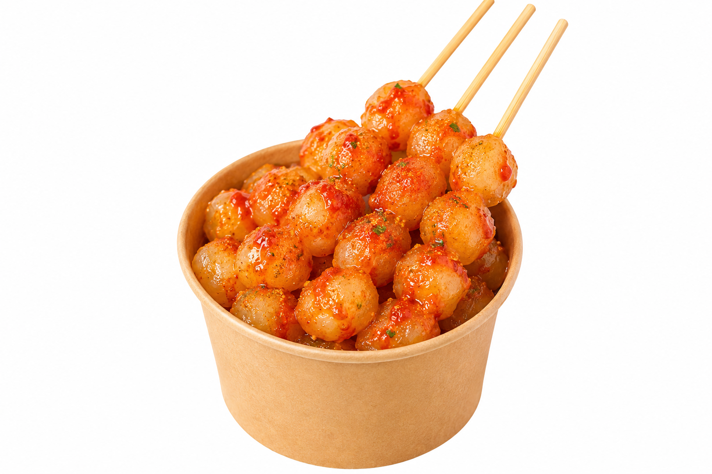

Cilor Kenyal Bumbu Pedas

Cilor gurih dengan perpaduan aci kenyal dan telur yang digoreng hingga matang. Disajikan dengan bumbu gurih pedas yang bikin nagih. Cocok jadi camilan favorit kapan saja!
Bahan-bahan
- 150 g tepung tapioka, 50 g tepung terigu
- 2 siung bawang putih, haluskan
- 1/2 sdt garam, 1/2 sdt kaldu bubuk
- 150 ml air panas
- 2 butir telur
- Tusuk sate secukupnya
- Minyak untuk menggoreng
- - Bumbu tabur sesuai selera
Cara Membuat
- Campurkan tepung tapioka, tepung terigu, bawang putih, garam, dan kaldu bubuk.
- Tuangkan air panas sedikit demi sedikit sambil diaduk hingga adonan bisa dibentuk.
- Bentuk adonan kecil-kecil, lalu rebus hingga mengapung dan tiriskan.
- Tusuk potongan aci menggunakan tusuk sate.
- Celupkan ke dalam telur kocok, lalu goreng hingga matang keemasan.
- 1. Angkat dan sajikan dengan bumbu tabur sesuai selera.
Tips: Pastikan aci sudah matang dan ditiriskan sebelum digoreng agar cilor tidak terlalu lembek.